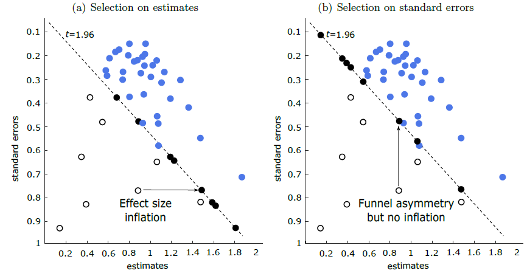

Abstract
Meta-analysis upweights studies reporting lower standard errors and hence more precision. But in observational settings common to much research on human behavior, precision is not given to the researcher. Precision must be estimated, and thus can be p-hacked to achieve statistical significance. Simulations and large-scale empirical applications show that spurious precision can invalidate inverse-variance weighting and bias-correction methods based on the funnel plot. Selection models fail to solve the problem, and common cures to publication bias can become worse than the disease. We introduce an approach (Meta-Analysis Instrumental Variable Estimator, MAIVE) that addresses spurious precision and limits the resulting bias in meta-analysis.
One-click meta-analysis in your browser: spuriousprecision.com Fig: Spurious precision (right pannel) renders common meta-analysis techniques biased
Reference: Irsova Z., Bom P. R. D., Havranek T., and H. Rachinger (2025): "Spurious Precision in Meta-Analysis of Observational Research." Nature Commun 16, 8454. doi.org/10.1038/s41467-025-63261-0